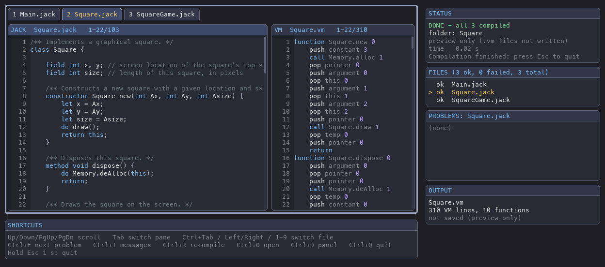
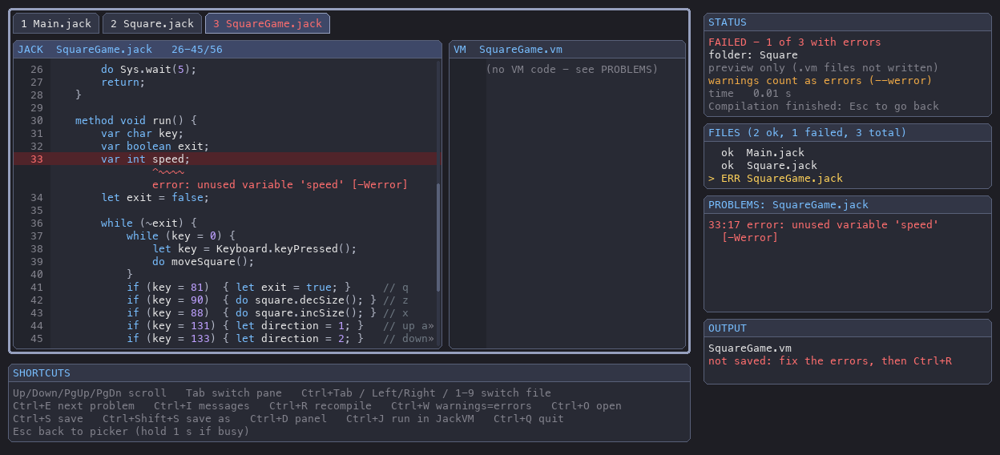

jackc-gui is the same compiler as jackc, in a window.
It compiles a .jack file or a whole folder and shows each Jack class
next to the VM code it turns into. If there are mistakes, it
marks them under the faulty line, the same way the compiler prints them.
It's the quickest way to see how Jack becomes VM code, and to fix a program
that won't compile.

Square.jack on the left, the Square.vm it compiles to on the right.1. Install and start it
The window is drawn with pygame. The
[gui] extra installs it next to the compiler:
git clone https://github.com/kpillai2017/jack-compiler.git
cd jack-compiler
pip install -e ".[gui]" # jackc + jackc-gui + pygame
Then start it in one of these ways:
jackc-gui # choose a .jack file or folder in a window
jackc-gui examples/ # compile a folder straight away
jackc-gui examples/Math.jack # ...or one file
jackc-gui -r projects/ # a whole tree, like jackc -r
jackc-gui src/ -o bin/ # write the .vm files to bin/
jackc-gui -o bin/ # choose in a window; the .vm files go to bin/
jackc-gui --no-write src/ # preview only: never write .vm files
jackc-gui --werror src/ # warnings count as errors
python -m jack_compiler.gui ... # the same, without installing
| Option | What it does |
|---|---|
input | A .jack file, or a folder of them. Leave it out to choose in a window. |
--gui | Open the file picker even though a path was given, starting in that folder. |
-o, --output | Where to write the .vm file(s). Default: next to the sources, like jackc. Works with the file picker too. Ctrl+Shift+S chooses another folder in the window. |
-r, --recursive | Compile .jack files in sub-folders too. The folder layout is kept under -o. |
--no-write | Compile and show the VM code, but don't write any files. |
--werror | Warnings count as errors, like jackc --werror. Ctrl+W switches it in the window. |
--rows N | Lines of code shown in each pane (default 34). Use fewer on a small screen. |
--font-size PT | Text size (default 13). |
--no-panel | Start with the info boxes hidden (Ctrl+D shows them). |
--version | Print the version and exit. |
When you close the window it prints a one-line summary, such as
Compiled 3 of 3 file(s); 0 failed. The exit status is
1 if any file failed, the same as jackc.
2. Choose what to compile
Without a path (or with --gui, or Ctrl+O in the
window), a small file browser opens. It only lists folders and
.jack files:
Choose a .jack file, or a folder of .jack files
/Users/you/jack-compiler/examples
-----------------------------------------------------------
<- .. (parent folder)
[+] Square/ [compile 3 files]
* HelloWorld.jack
* Math.jack
-----------------------------------------------------------
[ Compile this folder (5 files) ] [ Quit ]
- One file: click it, or select it and press Enter.
- A whole program: in nand2tetris one folder is one program
(one
.jackfile per class). Click[compile N files]next to the folder, or open the folder and press Compile this folder. - Move with ↑ ↓ PgUp PgDn Home End or the mouse wheel. Enter or → opens a folder, Backspace or ← goes up one level. Ctrl+Q quits.
- Esc quits from the first picker. If you came here from the compiler window (Esc or Ctrl+O), the button reads Back and Esc returns to what you had open.
- With
-r, a folder can be compiled when it has.jackfiles anywhere below it.
3. A tour of the window
| Part | What it shows |
|---|---|
| File tabs (top) | One tab per .jack file. Files with errors have red tabs. Click a tab, or press 1–9, to show that file. |
| JACK pane (left) | The source, with syntax colours and line numbers. Errors and warnings are drawn under the line they belong to. |
| VM pane (right) | The VM code the selected file compiles to. A file with errors has no VM code, so this pane points you to PROBLEMS. |
| STATUS | Whether it's compiling, finished or failed, what was compiled, whether files are written (preview only with --no-write), whether warnings count as errors (Ctrl+W), and how long it took. |
| FILES | Every file with ok or ERR. Click a row to show that file. |
| PROBLEMS | All errors (red) and warnings (amber) in the selected file, as line:column: message. |
| OUTPUT | The .vm file for the selected tab, its size in VM lines and functions, and whether it was saved. |
| SHORTCUTS (bottom) | A reminder of the keys. See Keyboard and mouse. |
let x = Ax; in a constructor becomes push argument 0 then
pop this 0, because x is field 0 and Ax is
argument 0. Every function, method and
constructor starts a new function Class.name nLocals
line in the VM pane, so it's easy to find the code for each one. For more
side-by-side examples see Examples, and for
the theory see How It Works.
4. Find and fix mistakes

direciton) and an unused variable. The error is marked under the exact word, with a hint.When compiling finishes, the window jumps to the first error
by itself. Each problem is shown the way jackc prints it:
- The line is shaded red for an error or amber for a warning.
- A
^~~~marker under the line points at the exact word, with the message below it. - Any
help:ornote:lines come after that, for example= help: did you mean 'direction'?
Then:
- Press Ctrl+E to jump to the next problem. It moves on to the next file when this one has no more.
- Fix the code in your own editor. The window is a viewer, not an editor.
- Press Ctrl+R to read the files again and recompile.
Press Ctrl+I to hide the messages under the code (the shading stays) and see the source on its own. Press it again to bring them back.
return, or calling a method with the wrong number of arguments)
stops that file from compiling, so it gets no .vm file. A
warning (such as an unused variable or unreachable code) is only advice:
the file still compiles. The complete list of checks is in the
Error Detection guide.
Making warnings count as errors
Press Ctrl+W (or start with --werror) to treat every
warning as an error, the same as jackc --werror. The window recompiles
straight away: files with warnings turn red, get no .vm file, and each
message ends in [-Werror]. STATUS shows warnings count as errors
(--werror) while it's on. Press Ctrl+W again to go back.
This is handy for tidying a program up before you hand it in: work through the
list with Ctrl+E until nothing is left.

SquareGame.jack from compiling.Pressing Ctrl+W while a compilation is still running does nothing except show a message, so one run never mixes both settings. Wait for it to finish, then press it again. The setting is kept when you open something else with Ctrl+O.
5. Run it in JackVM
If the companion VM, jackvm-py, is installed, press Ctrl+J to play the program you're looking at in a JackVM window:
- "The program" is every
.jackfile in the same folder as the selected tab, and all of them must compile. Otherwise the window saysFix the errors in Main.jack first. - The VM code goes to a temporary folder, so it works with
--no-writetoo. - Edit, Ctrl+R, then Ctrl+J again: the old JackVM window closes and a new one starts with your changes.
- If JackVM isn't found, SHORTCUTS shows
Ctrl+J find JackVM.... Press it and a folder chooser asks where yourjackvm-pyfolder is. Folders where JackVM can run are marked[use]. Choose one and the program starts. Your answer is saved in the config file, so both apps find it from then on.
Setting it up, and running Jack source from JackVM's side, is covered in Using the Compiler with JackVM.
6. Where the .vm files go
It follows the same rules as jackc, so you can switch between the two:
- By default each
Foo.jackbecomesFoo.vmin the same folder. - With
-o, the files go to that folder instead. With-r, the sub-folder layout is kept. - A file with errors gets no new
.vmfile. A.vmfile from an earlier, working compile is left as it was, so runjackc --cleanif you don't want the VM Emulator to load it. - With
--no-writenothing is written while compiling. STATUS says preview only, and OUTPUT says not saved. Ctrl+S still saves them. - Save as: Ctrl+Shift+S opens a folder
chooser. Enter opens a folder; click
[save here]next to a folder, press Ctrl+Enter, or press the Save here button to save the.vmfiles there (with-r, the sub-folder layout is kept). Esc goes back without saving. From then on, Ctrl+S and Ctrl+R save there, and STATUS shows the folder.
7. Keyboard and mouse
| Key | Action |
|---|---|
| ↑ ↓ PgUp PgDn Home End, mouse wheel | Scroll the code |
| Tab, or click a pane | Choose which pane (Jack or VM) the scroll keys move |
| Click a tab or a FILES row, Ctrl+Tab / Ctrl+Shift+Tab, Ctrl+PgDn / Ctrl+PgUp, ← →, 1–9, wheel over the tabs | Switch file: both panes show that .jack file and its VM code |
| Ctrl+E | Jump to the next error or warning |
| Ctrl+I | Show or hide the messages under the code |
| Ctrl+R | Recompile (reads the files again) |
| Ctrl+W | Warnings count as errors (like --werror), or back again; recompiles (details) |
| Ctrl+J | Run the program in JackVM, if it's installed (details) |
| Ctrl+O | Open another file or folder |
| Ctrl+S | Save the .vm files (also after --no-write) |
| Ctrl+Shift+S | Save as: choose the folder to save the .vm files in (details) |
| Ctrl+D | Show or hide the info boxes |
| Ctrl+Q | Quit |
| Esc | Back to the file picker (see below) |
8. Going back and quitting
Esc takes you back to the file picker, so you can open another program without restarting. It follows the same rules as the jackvm-py player, so a key pressed by mistake can't throw away a long build:
- While compiling: hold Esc for one second. A progress bar appears after a quarter of a second. Let go early to carry on.
- Once it has finished: a single press goes back. For a few seconds the window shows Compilation finished - press Esc to go back, Ctrl+Q to quit.
- The picker opens in the folder you were looking at. Press Esc there (or Back) to return to the program you had open.
- Ctrl+Q or closing the window always quits straight away, in the picker too.
9. Troubleshooting
| You see | What to do |
|---|---|
jackc-gui needs pygame | The Python that's running (the message names it) doesn't have pygame. Install the extra into it: pip install -e ".[gui]" from the checkout (or pip install pygame). |
jackc-gui: command not found | A new virtual environment is empty, including the one direnv's layout python makes. Run pip install -e ".[gui]" in it once. Check with which python and pip show jack-compiler. Without installing: python -m jack_compiler.gui from the repository root. |
No .jack files found in ... | The folder has no .jack files directly inside it. Add -r to look in sub-folders. |
| The window is taller than the screen | Show fewer lines, use smaller text, or both: --rows 20 --font-size 11. Ctrl+D hides the info boxes to make it narrower. |
Ctrl+J find JackVM... | Press it and choose your jackvm-py folder. No folder is marked [use]? JackVM isn't installed there yet: python3 -m venv .venv && .venv/bin/pip install -e . in that folder. See Using the Compiler with JackVM. |
Ctrl+J JackVM (not installed) | It's switched off: JACKVM=off, or jackvm = off in the config file. |
| Your change doesn't show | The window doesn't watch the files. Save in your editor, then press Ctrl+R. |
A file you fixed still has no .vm file | Check STATUS for preview only: you started with --no-write. |
10. How it's built
The window calls the same compiler as jackc. Nothing is
compiled differently, so the VM code and messages are identical. The code is
in jack_compiler/gui/,
and the parts that don't draw anything can be tested without a window:
| Module | Job |
|---|---|
main.py | Command-line options, and starting the picker or the window |
session.py | Compiles every file on a background thread and keeps a result per file; saves the .vm files and can send them to another folder (no pygame) |
window.py | The main window: layout, keys, drawing |
annotate.py | Turns diagnostics into the shaded lines and ^~~~ rows under the code |
syntax.py | Syntax colouring for Jack and VM code (no pygame) |
panel.py | The STATUS / FILES / PROBLEMS / OUTPUT / SHORTCUTS boxes |
file_picker.py | The file browser, also used to choose the folder for “save as” |
run_in_vm.py | Ctrl+J: compiles the folder to a temporary directory and starts JackVM (found by ../integrations.py) |
theme.py | Colours and fonts, matching the jackvm-py player |
The tests in tests/test_gui.py use SDL's dummy video
driver, so they draw into memory and run on CI machines with no screen. A fake
clock lets them "hold Esc for one second" without waiting.